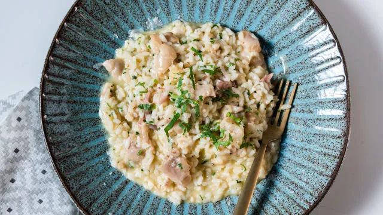

INGREDIENTES
- 2 pézinhos de porco
- 0,5L de água
- 2 chalotas picadas
- 300g risoto Bom sucesso
- 3 colheres sopa de azeite
- 2 dentes de alho picado
- 100ml de vinho branco seco
- 2 gemas
- Sumo de 1 limão
- 1 casca de limão
- 1 limão para raspar
- 1 colheres de sopa de manteiga
- 30g de parmesão
- 50g de mozarela ralado
- 15g de coentros
MODO DE PREPARO
- Coza 2 pés de porco com sal, pimenta, uma casca de limão, 1 talo de aipo e 1 cebola durante 2h30min.
- Retire os pezinhos e acrescente 0,5L de água ao caldo da cozedura. Mantenha em lume brando.
- Desosse os pézinhos cozidos, pique-os com cerca de 1 cm e reserve.
- Para o risoto comece por refogar 2 chalotas picadas com 3 colheres de sopa de azeite e 2 dentes de alho. Quando as chalotas estiverem translúcidas, acrescente 200g risoto e deixe fritar um pouco.
- Junte 100ml de vinho branco e deixe evaporar. Adicione aos poucos a água da cozedura dos pezinhos, mexendo de vez em quando até o arroz estar cozido. (Cerca de 15 minutos).
- Bata 2 gemas com sumo de 1 limão e tempere esta mistura com um pouco de caldo.
- Adicione ao risoto os pezinhos picados e a mistura das gemas,1 colher de sopa de manteiga, 50g de mozarela ralado e 30g de parmesão ralado.
- Pique os coentros e envolva-os no risoto. Retifique temperos e finalize com raspa de limão e parmesão.